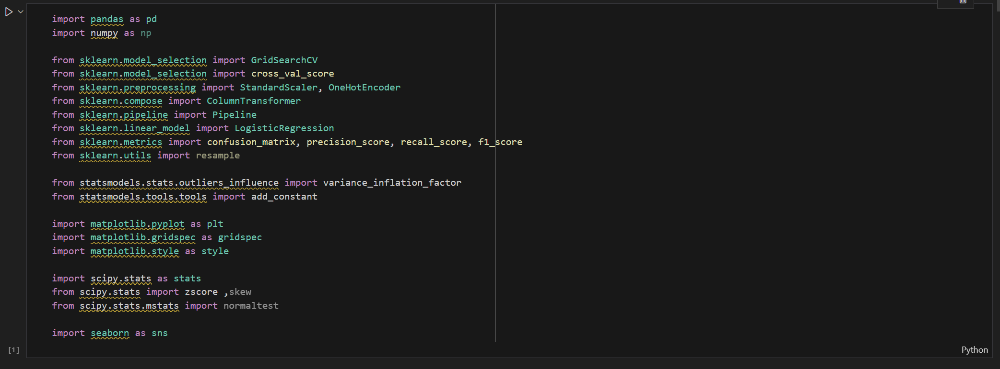

Objective
Find out those customers who are willing to subscribe the deposit.
Challenge(s) and Solution(s)
Several challenges include bad performance of simple logistic Regression
and clustering interpretation.
Solutions include add regularization such as lasso and ridge and
grid_search after fix the imbalance of the target variable
(too many 0 but a few 1). For clustering the segmentation is not ideally obvious
but we are still able to get some insights.
Tool(s)
 ↖ Click to view on GitHub
↖ Click to view on GitHub
Project Highlights
*Required Packages
1.Logistic Regression Packages

2.Clustering Packages
Classification-Logistic Regression Model Result
*Customers Segmentation-Clustering
1.Model Result of Clustering
2.Conversion Rate for Each Clustering
Note: you may check Github for additional methods including Random Forest and XGBoost